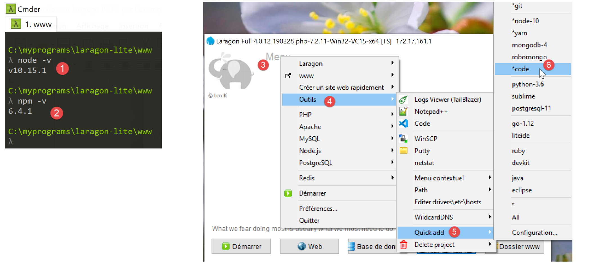
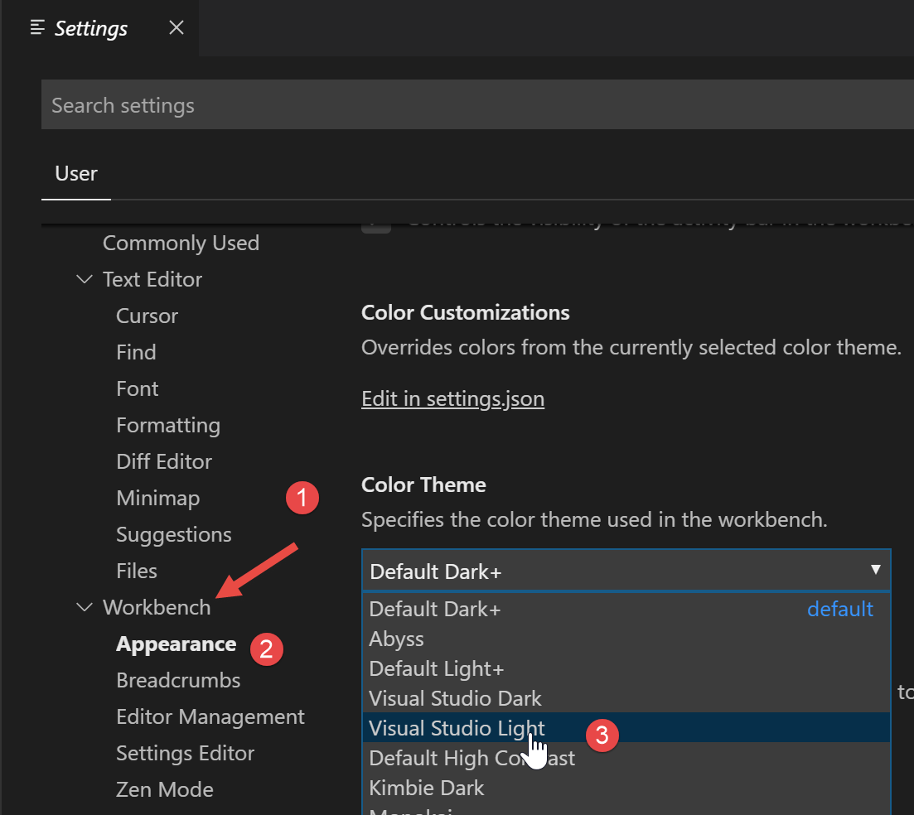
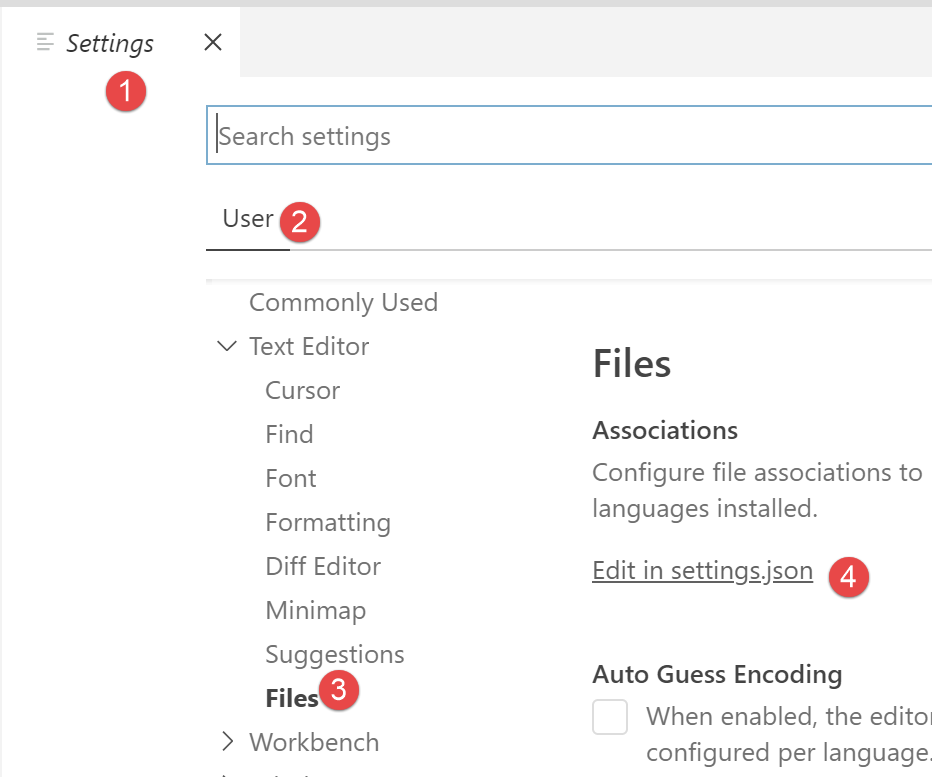
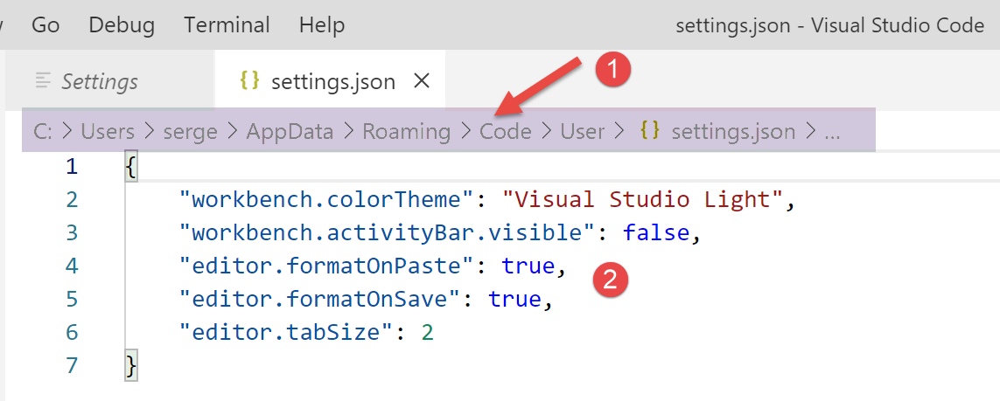
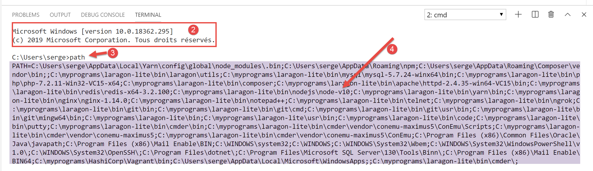
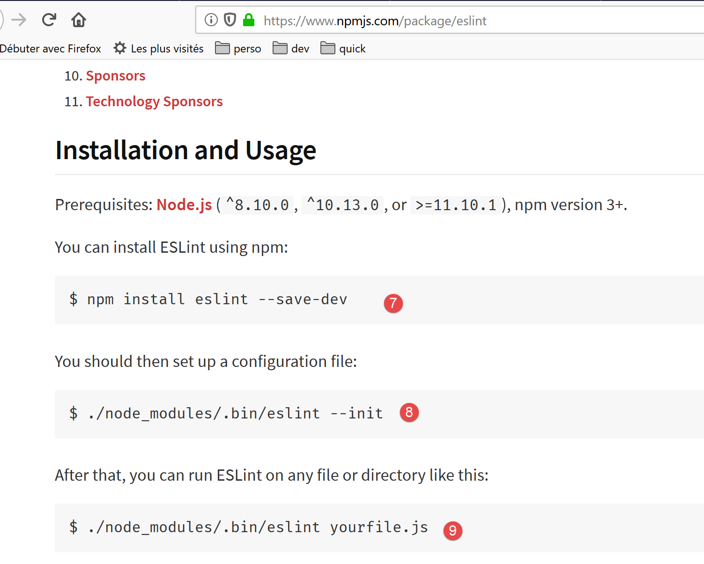
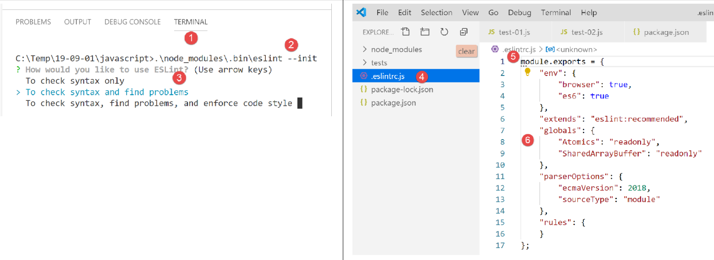
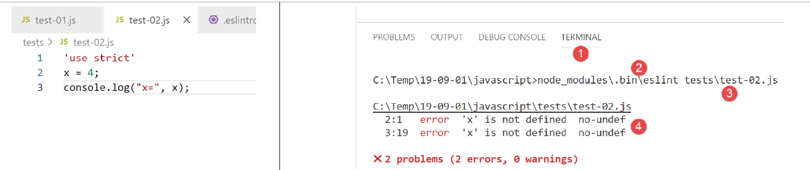
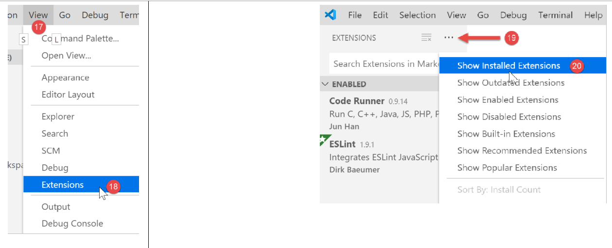

2. Configuración de un entorno de desarrollo
Utilizaremos las siguientes herramientas (en Windows 10 x64):
- [Laragon] para ejecutar el servidor web PHP;
- [NetBeans] para editar el código PHP;
- [Visual Studio Code] para escribir código JavaScript;
- [Node.js] para ejecutarlo;
- [npm] para descargar e instalar las bibliotecas de JavaScript que necesitaremos;
2.1. Entorno de desarrollo del servidor web
Los scripts PHP se escribieron y probaron en el siguiente entorno:
- un entorno de servidor web Apache / SGBD MySQL / PHP 7.3 denominado Laragon;
- el IDE de desarrollo NetBeans 10.0;
2.1.1. Instalación de Laragon
Laragon es un paquete que combina varios componentes de software:
- un servidor web Apache. Lo utilizaremos para escribir scripts web en PHP;
- el sistema de gestión de bases de datos MySQL;
- el lenguaje de programación PHP;
- un servidor Redis que proporciona almacenamiento en caché para aplicaciones web:
Laragon se puede descargar (marzo de 2019) en la siguiente dirección:


- La instalación [1-5] da como resultado la siguiente estructura de directorios:

- [6] contiene el directorio de instalación de PHP;
Al iniciar [Laragon] aparece la siguiente ventana:

- [1]: el menú principal de Laragon;
- [2]: el botón [Start All] inicia el servidor web Apache y la base de datos MySQL;
- [3]: el botón [WEB] muestra la página web [http://localhost], que corresponde al archivo PHP [<laragon>/www/index.php], donde <laragon> es la carpeta de instalación de Laragon;
- [4]: el botón [Base de datos] te permite gestionar la base de datos MySQL mediante la herramienta [phpMyAdmin]. Debes instalar esta herramienta previamente;
- [5]: El botón [Terminal] abre un terminal de comandos;
- [6]: El botón [Root] abre una ventana del Explorador de Windows situada en la carpeta [<laragon>/www], que es el directorio raíz del sitio web [http://localhost]. Aquí es donde debe colocar todas las aplicaciones web gestionadas por el servidor Apache de Laragon;
Abramos un terminal de Laragon [5]:

- en [1], el tipo de terminal. Hay tres tipos de terminales disponibles en [6];
- en [2, 3]: la carpeta actual;
- En [4], escribe el comando [echo %PATH%], que muestra la lista de carpetas en las que se busca un ejecutable. Todas las carpetas principales de Laragon están incluidas en esta ruta de ejecutables, lo que no sería el caso si abrieras un símbolo del sistema [cmd] en Windows. En este documento, cuando tengas que escribir comandos para instalar un software concreto, estos comandos se escriben generalmente en un terminal de Laragon;
2.1.2. Instalación del IDE NetBeans 10.0
El IDE de NetBeans 10.0 se puede descargar desde la siguiente dirección (marzo de 2019):
https://netbeans.apache.org/download/index.HTML

El archivo descargado es un archivo ZIP que solo hay que descomprimir. Una vez instalado y ejecutado NetBeans, puedes crear tu primer proyecto PHP.

- En [1], selecciona la opción Archivo / Nuevo proyecto;
- En [2], seleccione la categoría [PHP];
- en [3], seleccione el tipo de proyecto [Aplicación PHP];

- En [4], asigna un nombre al proyecto;
- En [5], elige una carpeta para el proyecto;
- En [6], selecciona la versión de PHP descargada;
- En [7], selecciona la codificación UTF-8 para los archivos PHP;
- En [8], seleccione el modo [Script] para ejecutar scripts PHP en modo de línea de comandos. Seleccione [Servidor WEB local] para ejecutar un script PHP en un entorno web;
- En [9,10], especifica el directorio de instalación para el intérprete PHP del paquete Laragon:

- seleccione [Finalizar] para completar el asistente de creación del proyecto PHP;

- En [11], el proyecto se crea utilizando un script [index.php];
- En [12], escribimos un script PHP mínimo;
- en [13], ejecutamos [index.php];

- en [14], los resultados en la ventana [salida] de NetBeans;
- en [15], creamos un nuevo script;
- en [16], el nuevo script;
El lector puede crear todos los scripts que siguen en diferentes carpetas dentro del mismo proyecto PHP. El código fuente de los scripts de este documento está disponible en la siguiente estructura de directorios de NetBeans:

Los scripts de este documento se encuentran en el directorio del proyecto [scripts-console] [1]. También utilizaremos bibliotecas PHP que se colocarán en la carpeta [<laragon-lite>/www/vendor] [2], donde <laragon-lite> es el directorio de instalación del software Laragon. Para que NetBeans reconozca las bibliotecas de [2] como parte del proyecto [scripts-console], debemos incluir la carpeta [vendor] [2] en la [Ruta de inclusión] [3] del proyecto. Configuraremos NetBeans para que la carpeta [<laragon-lite>/www/vendor] [2] se incluya en todos los nuevos proyectos PHP, no solo en el proyecto [scripts-console]:

- En [1-2], ve a las opciones de NetBeans;
- en [3-4], configura las opciones de PHP;
- en [5-7], configura la [Ruta de inclusión global] de PHP: las carpetas que aparecen en [7] se incluyen automáticamente en la [Ruta de inclusión] de todos los proyectos PHP;

- en [9], acceda a las propiedades de la rama [Ruta de inclusión];
- en [10-11], las nuevas bibliotecas exploradas por NetBeans. NetBeans explora el código PHP de estas bibliotecas y almacena sus clases, interfaces, funciones, etc., con el fin de proporcionar asistencia al desarrollador;

- en [12], un fragmento de código utiliza la clase [PhpMimeMailParser\Parser] de la biblioteca [vendor/php-mime-mail-parser];
- En [13], NetBeans sugiere los métodos de esta clase;
- En [14-15], NetBeans muestra la documentación del método seleccionado;
El concepto de [Include Path] es específico de NetBeans. PHP también cuenta con este concepto, pero, en principio, se trata de dos conceptos diferentes.
Ahora que el entorno de desarrollo está configurado, podemos repasar los conceptos básicos de PHP.
2.2. Entorno de desarrollo para JavaScript
Estas herramientas se pueden instalar utilizando Laragon (véase la sección de enlaces):

En [4], instala [node.js]. Una vez completada la instalación, abre un terminal de Laragon (véase la sección de enlaces) y comprueba la versión de [node.js] instalada (1), así como la de [npm] (2):

A continuación, instalamos Visual Studio Code, a menudo denominado [code] o [VSCode] [3-6]. Una vez hecho esto, podemos iniciar esta herramienta de desarrollo:


2.2.1. Configuración de Visual Studio Code
Ahora mostraremos cómo hemos configurado [VSCode] para que el lector pueda entender las capturas de pantalla que aparecerán de vez en cuando. El lector es libre de configurar [VSCode] como mejor le parezca. Incluso puede configurar su espacio de trabajo preferido. Esto no es importante para lo que haremos a continuación.
En primer lugar, cambiaremos el aspecto de la ventana de [VSCode] para que tenga un fondo claro en lugar de negro:

A continuación, ocultamos la barra lateral izquierda [1-2], cuyos elementos también están disponibles en el menú. En [3-6], configuramos el código para que se formatee automáticamente cada vez que se guarde el archivo y cada vez que copiemos y peguemos.

Después de guardar la configuración [Ctrl-S], puedes cerrar la ventana [Configuración] [7]. Puedes volver a la configuración de [VSCode] en cualquier momento [8-10]:

Estos ajustes se guardan en un archivo [settings.json] que se puede editar directamente. Abramos la ventana [Configuración] como se muestra:

En [4], puedes editar el archivo [settings.json] directamente:

- en [1], la ruta al archivo [settings.json]. Una forma de volver a la configuración predeterminada es eliminar este archivo;
- en [2], la configuración que acabamos de establecer;
Ahora, abramos un terminal dentro de [VSCode] [1-2]:

- en [3], el tipo de terminal abierta, en este caso PowerShell;
- en [4], puedes escribir comandos de Windows;
- en [6], puedes abrir terminales adicionales;
- en [5], la lista de terminales abiertos;
- en [7], cierra el terminal activo;
Utilizaremos el terminal de [VSCode] para instalar paquetes (bibliotecas) de JavaScript mediante la herramienta [npm] (Node Package Manager). Comprobemos, tal y como hicimos anteriormente en un terminal de Laragon, qué versión de [npm] está instalada:

Vemos que el comando [npm] no ha sido reconocido. Esto significa que no forma parte de la ruta PATH de la terminal (la lista de carpetas en las que buscar un ejecutable, en este caso [npm]). Podemos averiguar la ruta PATH que utiliza la terminal:

El ejecutable [npm] no se encuentra en estas carpetas. Al igual que las demás herramientas instaladas por Laragon, se encuentra en la carpeta [<laragon>\bin] de Laragon, concretamente en la carpeta [nodejs] [4-6].

Para iniciar [VSCode] y acceder a [npm], iniciaremos [VSCode] desde un terminal de Laragon. Al iniciarse de esta manera, [VSCode] heredará la ruta PATH del terminal de Laragon, que contiene las carpetas de los ejecutables [node] y [npm]:

- en [1]: escribe el comando [path];
- en [2]: la lista de carpetas del PATH. Vemos la carpeta [node-v10] [2], lo que garantiza que se encontrarán los ejecutables [node] y [npm];
[VSCode] se inicia desde un terminal de Laragon utilizando el comando [code]:

- en [2], abre una terminal de PowerShell en [VSCode];
- en [3-4], se puede ver que se puede acceder a los ejecutables [node] y [npm];
Nota: No cierres la terminal de Laragon que ha iniciado el entorno de desarrollo [VSCode], ya que, de lo contrario, el propio VSCode se cerrará.
Realizaremos una última configuración: cambiaremos el terminal predeterminado de [VSCode]:


El archivo [settings.json] se actualiza inmediatamente:

Ahora, abramos un nuevo terminal de [VSCode] [1]:

- en [2], un terminal [cmd] (no PowerShell);
- En [3], el comando [path] muestra la variable PATH del terminal;
- en [4], se pueden ver claramente las carpetas ejecutables [node] y [npm]
2.2.2. Añadir extensiones a Visual Studio Code
Creemos un archivo JavaScript con [VSCode]:


- en [3-4], creamos una carpeta;
- en [5], la establecemos como carpeta actual en [VSCode];
- En [6], abre un terminal;
- en [7], puedes ver que ahora te encuentras en la carpeta seleccionada. Los siguientes pasos se realizarán en esta carpeta;

- En [1-3]: crea una nueva carpeta;
- En [4]: añade un archivo a esta carpeta;

- en [5-7]: crea tu primer programa en JavaScript;

- En [8-9]: Ejecute el programa JavaScript;
- El resultado aparece en la consola de ejecución [10]. En [11], vemos el comando que se ha ejecutado: la aplicación [node] ha ejecutado el script [test-01.js]. Esto ha sido posible porque este ejecutable se encuentra en la ruta PATH de [VSCode]; de lo contrario, habríamos recibido un error indicando que el comando [node] era desconocido;
Procedamos de la misma manera para ejecutar un segundo script [test-02.js]:

- En [1-3] se define el nuevo script. La instrucción [use strict] de la línea 1 exige una comprobación sintáctica estricta. En este contexto, todas las variables deben declararse utilizando una de las palabras clave [let, const, var]. Este no es el caso de la variable [x] de la línea 2;
- cuando ejecutamos este código con [Ctrl-F5], obtenemos el error [5]. Es posible recibir una advertencia sobre este tipo de error antes de la ejecución. Esto es preferible. Vamos a hacer dos cosas:
- instalar una biblioteca llamada [eslint] mediante [npm] que comprueba si la sintaxis del script cumple con el estándar ECMAScript 6;
- instalar una extensión de Visual Studio Code, también llamada ESLINT, que facilita el uso de la biblioteca [eslint] dentro de [VSCode];
En primer lugar, instalemos la biblioteca JavaScript [eslint] utilizando la herramienta [npm]. Para instalar una biblioteca [npm] (conocida como paquete), es necesario conocer su nombre exacto. Si no lo sabes, puedes ir a la página web de [npm] en la URL (2019) [https://www.npmjs.com/]:

- en [3], los paquetes que empiezan por [esl];
- en [4-6], encontrarás el paquete [eslint];

- en [7], el comando [npm] para instalar el paquete [eslint];
- en [8], la configuración del paquete;
- en [9], cómo utilizarlo para comprobar la sintaxis de un script de JavaScript;
Instalamos el paquete [eslint] en una ventana de [Terminal] en [VSCode]. Primero, debemos crear un archivo [package.json] en la raíz del directorio de trabajo de [VSCode]. Este archivo contendrá la lista de paquetes JavaScript utilizados por el proyecto [VSCode]:

- en [1], haz clic con el botón derecho en el explorador de proyectos (no en la carpeta tests);
- en [3-4], crea el archivo [package.json] en la raíz del proyecto [JavaScript], al mismo nivel que la carpeta [tests] (pero no dentro de [tests]);
- en [4-6], añade un objeto JSON vacío al archivo [package.json];
A continuación, abre un terminal de [VSCode] para instalar [eslint]:

- En [2], te encuentras en la raíz del proyecto [javascript];
- En [3], el comando que instala el paquete [eslint];
- tras la ejecución,
- En [4-5], se ha modificado el archivo [package.json]. La línea 3 muestra la versión de [eslint] que se ha instalado. La línea 2, [devDependencies], corresponde a la opción [--save-dev] utilizada durante la instalación. Este argumento significa que la dependencia instalada debe aparecer en el archivo [package.json] como parte de la propiedad [devDependencies]. Esta propiedad enumera las dependencias del proyecto necesarias en modo de desarrollo, pero no en modo de producción. De hecho, la dependencia [eslint] solo es necesaria durante el desarrollo para verificar que el código escrito cumple con el estándar ECMAScript;
- en [6], ha aparecido una carpeta [node_modules] en el proyecto. Esta es la carpeta donde se instalan las dependencias del proyecto;

- En [7], algunos de los paquetes instalados. Hay bastantes. De hecho, no solo se ha instalado el paquete [eslint], sino también todos los paquetes de los que depende;

- [1-2], en un terminal de [VSCode], ejecuta el comando para configurar el paquete [eslint]. Esto te hará varias preguntas [3] para determinar cómo quieres utilizar [eslint]. En caso de duda, deja las opciones predeterminadas tal y como están. Para seleccionar una opción, utiliza las teclas de flecha arriba y abajo del teclado para elegirla y, a continuación, confírmala;
- En [4], se ha creado un archivo [.eslintrc.js] en el directorio raíz del proyecto;
- en [6], el contenido del archivo. Puedes copiar el contenido en tu propio archivo;
module.exports = {
"env": {
"browser": true,
"es6": true
},
"extends": "eslint:recommended",
"globals": {
"Atomics": "readonly",
"SharedArrayBuffer": "readonly"
},
"parserOptions": {
"ecmaVersion": 2018,
"sourceType": "module"
},
"rules": {
}
};
Esto no es suficiente para informar de los errores en el archivo [test-02.js]:

- debes escribir el comando [2-3] para que se analice el archivo [tests/test-02.js];
- en [4], se detecta el error relativo a la variable no declarada;
Vamos a añadir una extensión a [VSCode] que nos permitirá ver los errores de JavaScript en tiempo real. Esta extensión se basa en el paquete [eslint] que hemos instalado:

- en [3-5], instalamos la extensión llamada [ESLint];

- En [1], una página de información sobre la extensión recién instalada;
- en [2], podemos ver que el modo de validación de [ESLint] es [type], lo que significa que la sintaxis de los scripts de JavaScript se validará a medida que se escriba el texto;
ESLint se puede configurar a través del archivo de configuración general de [VSCode]:

- en [6-7], la configuración de [ESLint]. Aquí es donde puedes modificarla;
Ahora volvamos al archivo [test-02.js]:

- En [3-4], ahora se señalan los errores relacionados con la variable [x];
- en [5]: el número de errores de ESLint en el archivo;
- en [6], indica que hay archivos con errores en la carpeta [tests];
Si corregimos el error, las advertencias de ESLint desaparecen:

Ahora instalemos una extensión llamada [Code Runner]:

- Una vez instalada la extensión [Code Runner] [1-5], puedes configurarla siguiendo los pasos [6-7] (arriba);

- en [1-2], las opciones de configuración de [Code-Runner];
- En [3], especificamos que el terminal de salida debe borrarse antes de cada ejecución;
- en [4], localice el elemento [Executor Map], que enumera las herramientas de ejecución para diferentes lenguajes;
- en [5-6], copiamos la configuración al portapapeles;
- en [7-8], modificamos el archivo [settings.json];

- en [2], añade una coma después del último elemento del archivo [settings.json] [1];
- en [3], pega lo que se copió anteriormente en [5-6]: esta es la lista de comandos para ejecutar los distintos lenguajes compatibles con [VSCode];
- en [4], el comando para ejecutar archivos JavaScript. Esto solo funciona si [node] está en la ruta PATH de [VSCode]. Si no es así, puedes introducir la ruta completa al ejecutable [5];
Ahora guardemos la configuración (Ctrl-S). Con la extensión [Code Runner], los archivos JavaScript se pueden ejecutar haciendo clic con el botón derecho del ratón sobre el código [6] (arriba):

2.2.3. Algunos comandos útiles de [VSCode]
- Para dar formato al código, haz clic con el botón derecho sobre él [1];
- Para cerrar las ventanas abiertas, haz clic con el botón derecho del ratón en sus títulos [2-3];

- Para mostrar una ventana específica [4-5];
- Para guardar tu proyecto (espacio de trabajo) [6-9];
- Para guardar un proyecto [10-11];


- Para abrir un proyecto [11-16]:

- Ver extensiones instaladas [19-20]:

Ahora disponemos de buenas herramientas para desarrollar en JavaScript. A continuación, presentaremos este lenguaje mediante breves fragmentos de código. Dado que esta introducción sigue a un curso de PHP, compararemos ocasionalmente ambos lenguajes para resaltar sus diferencias.